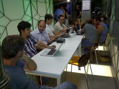

¿Quiénes somos?
"Symfony Madrid" es un grupo de personas creativas, innovadoras y entusiastas que han apostado por el framework Symfony para sus desarrollos web y desean reunirse para intercambiar ideas y crear un conocimiento común.

Próxima Reunión
- Fecha: 31 de Agosto de 2.011
- Hora: 18:30
- Lugar: Ciball
Calle Corredera Baja de San Pablo, 41
28004 Madrid
Ver mapa más grande
Asistentes
- Óscar López
- Moisés Gallego
- Daniel González
- Carlos Benítez
¡Apúntate!